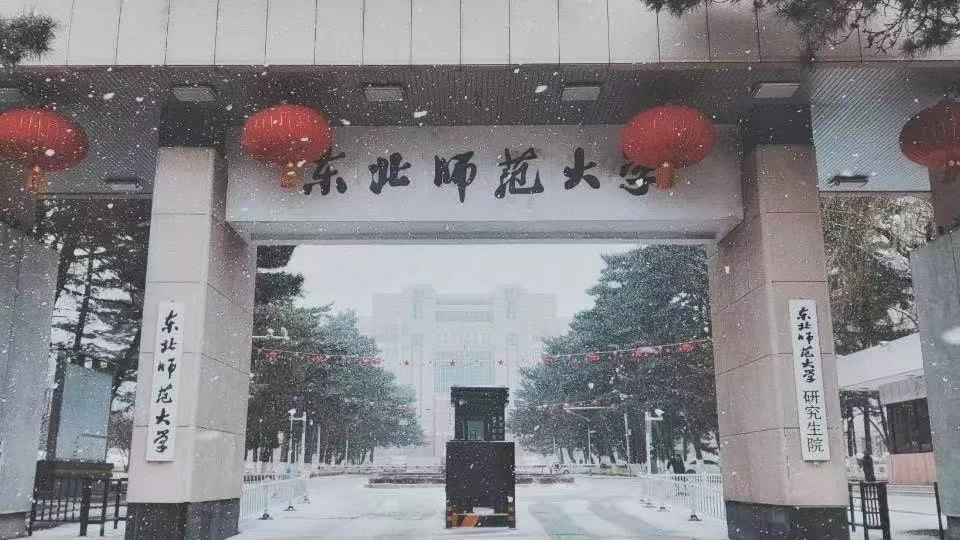

党建园地

学习处党支部
支部简介
支部委员信息
学习中心
系列讲话
党章党规
党支部建议
“不忘初心，牢记使命”主题教育
党支部微党课
主题党日活动
疫情防控专栏
日常管理
管理制度
业务办理
表格下载
学生处分填报表
宿舍相关填报表
学生活动经费报销
心灵港湾
中心简介
教育培训
朋辈辅导
心理知识科普
心理咨询
服务内容
服务安排
咨询原则
咨询误区
危机干预
援助热线
思政教育
入学导航
入学教育方案
入学教育新闻
典型培育
理想与成才报告团
班长联席会
本科生党支部主题活动立项
红色体验
致敬焦裕禄
回望延安
重上井冈山
寻访红岩
毕业教育
毕业教育方案
毕业教育新闻
网络思政
学院特色工作
化学学院
政法学院
商学院
文学院学院
数学统计学院
历史文化学院
美术学院
信息科学与技术学院
音乐学院
教育学院
生命科学学院
外国语学院
体育学院
物理学院
队伍建设
纲领文件
培训培养
基层队伍
副书记
分团委书记
辅导员
部门介绍
部门简介
工作理念
机构设施
人员信息
学指委
学工部
学生处
网站首页
校园新闻
通知公告
党委学生工作部
网站首页
校园新闻
通知公告
本站导航
当前位置 :
网站首页
首页
上一页
下一页
尾页
当前第
页 共
页 共
条数据 到第
页
确定


.png) 党委学生工作部
党委学生工作部 网站首页
网站首页 通知公告
通知公告.png) 本站导航
本站导航